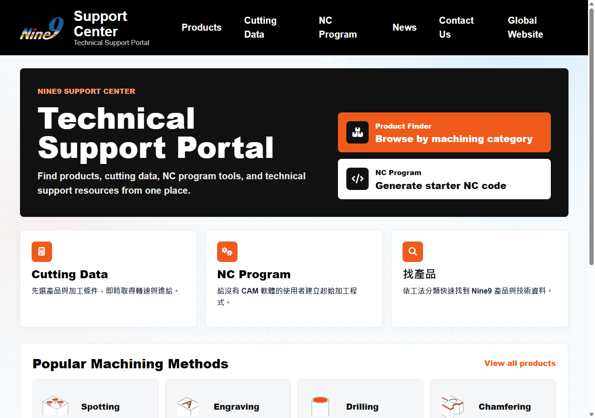

讓客戶找到下一步01 / 03
ENGINEER. BUILDER. EXPLORER.
把現場經驗、刀具應用與數位工具串起來。最近正在建置公司外銷的技術支援網站。

切換看看，我正在做的技術工具。
A FEW THINGS I'M WORKING ON
作品、筆記，以及下一個想解開的問題。
公司外銷的技術支援網站。把找產品、查切削資料、準備 NC 程式，整理成客戶能操作的流程。
整理加工、刀具、Web 與 AI 的經驗，慢慢長成自己的技術手冊。
8 個整理起點 A LITTLE MORE ABOUT ME工作能力、使用工具與持續更新的個人履歷。
閱讀我的履歷技術的價值，是有人用得上。
MY TOOLBOX
LET'S CONNECT
技術交流、工具開發，或是下一個值得投入的問題。
SELECTED WORK / 作品案例
從問題背景、採用方法到驗證證據，讓作品說明我如何思考與實作。
問題背景 → 我的角色 → 解決方法 → 交付成果 → 驗證證據
THE ENGINEERING NOTEBOOK / 技術知識庫
CNC／CAM、刀具應用、Web 與 AI。把零散經驗，整理成能反覆查用的知識。
試著換個關鍵字，或回到全部分類。
MANUFACTURING × DIGITAL TOOLS
產品管理部工程師